What is TACTIC and how is it all put together?
TACTIC is a project-based system that can be configured to accommodate the custom requirements of many different project scenarios.
Any project or asset management scenario can have a large number of items to manage. These items can be people, files, tasks or information and the management of these items are often a hurdle. The primary goal of TACTIC is to assist in generating placeholders, controlling workflow and managing these items.
The TACTIC Server
The Tactic server is a system which runs the TACTIC application. This server is often housed in your facility as a website which runs on your private network, or can be opened up to the world wide web like any other website.
For Tactic to run there are 4 main services:
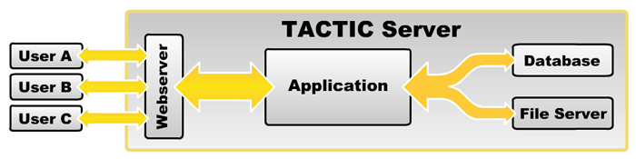
Database Server | This is where Tactic stores all of the meta data The "database is the base location for all of your data. This data is all information often tracked in spreadsheets, emails, sticky notes, whiteboards etc. A database provides a powerful central location for this information which helps keep everything in one place. |
File server | This is were TACTIC stores the files Files in TACTIC are managed externally on a file system. For example, most businesses have a file server that users save to. The file server typically has a root assets directory where TACTIC handles the directory and filenames for the entire file system. |
TACTIC Application | This is the central hub for all processing All processes and interactions are managed through TACTIC transaction system. The TACTIC Application sends/retrieves information from the database, and files from the File Server. TACTIC’s web interface can be delivered in multiple configurations based on the needs of the end user. |
Web Server | The Web Server delivers the interface to the end user The Web Server delivers the TACTIC Interface to the end user’s web browser. The Web Server is a web portal to the TACTIC Application. |
What is a TACTIC Project?
A TACTIC project stores all inserted information and configuration. In the back-end, each project is a complete "database".
There are 2 major components to a TACTIC Project database; Setup (configuration) and Meta Data
Project configuration - Each TACTIC project can be unique based on the desired end-user experience. TACTIC is extremely configurable which make various end-user workflows possible.
Project Information (Meta Data) - Once you have a project setup and configured, it stores all that data in the project. Because all data is centralized in a database, it makes real-time updates and collaboration on project tasks possible.
Tactic can house multiple projects at the same time with each being a separate project configuration. Within a project, there can be a hierarchy of different types of objects in your project design.
Project Structure
There are 2 major components to setting up the base structure of a TACTIC Project:
- The Project Schema which represents what you manage and produce, and how these objects relate to each other.
- The Project Workflow which represents processes and workflows these objects travel through during their life-cycle
Project Schema
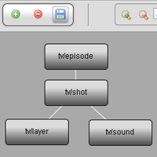 | The project Schema is the central hub for traversing a project, and is the most important aspect of the project setup. The Schema node (sType), is a type of object you manage. i.e.. episodes, shots, sound. For example, a television series may have multiple episodes, and each episode may have multiple shots. By relating Episodes to Shots, this will display all shots in a particular episode in one TACTIC view. The layout of a Project Schema will depend on how the project is managed and how the sTypes relate to each other. |
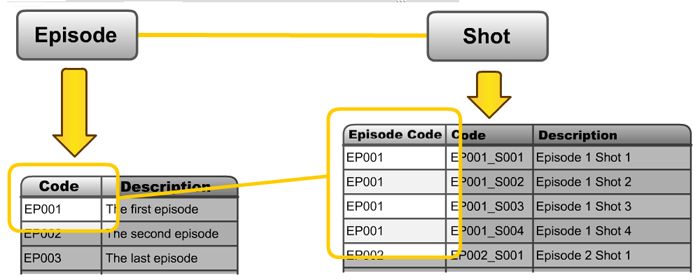
Project Workflow
The Project workflow is a layout of a pipeline processes. Each pipeline defines a set of processes that a single object can travel through. These pipelines also represent the dependencies between the processes. For example, each process inherently knows which processes are upstream, and which are downstream. This can be leveraged with automated notifications, emails, status updates and external trigger processing tools.
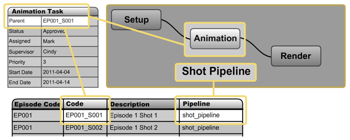
The Project Schema and the Project Workflow Editor are connected. The Schema is used to layout the sTypes individually, and the Work-flow Editor is used to create the pipelines the sTypes will flow through.
Searchable Types(sType)
What are "sTypes"?
Within the schema for a project there are various "types" of manageable objects that are defined when a node is created. These items are called Searchable Types (sTypes). Each of these Types are actually a table in the database and each column represents a property relevant to that sType.
A project configuration can have various views, pipelines, naming conventions, access rules etc, which are all defined based on an assignment to a sType.
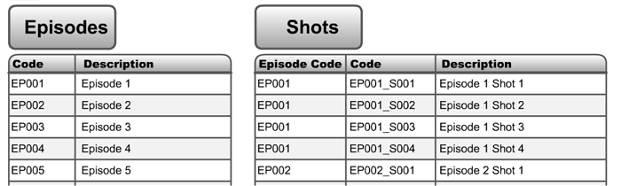
Searchable Objects(sObjects)
What are Searchable Objects (sObjects) and how are they related to sTypes?
Searchable Object or sObjects are the entries in the sType’s table. Each entry can be thought of as a container or placeholder for the object it represents ( a shot, an episode, a document etc). For example, Shot EP001_S003 is the sObject, which we can see is an entry in the Shots table (sType) on the right.
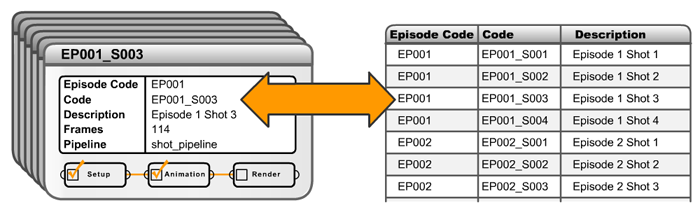
Common TACTIC sTypes
TACTIC provides a set of default sTypes:
Tasks
Tasks can be created based on the pipeline associated to a particular sObject. Tasks provide tracking for various processes such as; Status changes, Start and End date, Assigned User, Assigned Supervisor, etc. Users can be provided with a view that displays all assigned tasks, when each task is due, and what tasks to expect in the future etc.
Snapshots
When you check in a file, it may involve one file or it might be 1000 files. A snapshot represents a complete package of that sObject at the point of check-in. Snapshots store the version and revision information, as well as the location of the file(s) in the file system. Snapshots can also store "dependencies" to other Snapshots. Dependencies provide a trail to indicate that one check-in is dependant on one or more other Snapshots.
Notes
Notes can be added to any task or snapshot and provide instant feedback and real-time collaboration between end users. These Notes and update information can be sent to the user via TACTIC Notifications and/or email.
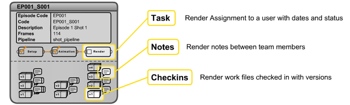
Within an object being tracked in TACTIC (shot, episode, document etc), separate child objects are stored and categorized by a process. For example, the "design" process has notes, tasks, snapshots etc. All of these would be stored within the shot EP001_S001. Through this concept, all of the life-cycle information regarding an object is easily accessible and organized and more importantly are used to drive the object through it’s pipeline.
TACTIC Interface
Searching for Types of Objects
TACTIC interface allows users to search for information (sObjects) in the TACTIC system. End users are able to quickly find and display information relevant to their day-to-day tasks. The information can be displayed in a variety of ways such as simple tabular data, dynamic reporting or dashboards for example.
Built-in STypes
When using the expression or adding widget config entries for built-in STypes, you would want to get familiar with how to represent notes (sthpw/note) or tasks (sthpw/task) for example. Below is the full list:
Table 1. Main SType List
| Name | SType |
|---|---|
File | sthpw/file |
Login | sthpw/login |
Login Group | sthpw/login_group |
Milestone | sthpw/milestone |
Note | sthpw/note |
Project | sthpw/project |
Pipeline | sthpw/pipeline |
Schema | sthpw/schema |
Status Log | sthpw/status_log |
Snapshot | sthpw/snapshot |
Task | sthpw/task |
The project schema is used to create structure or a "data model" of a project. The Schema view defines the type of items managed by using a visual graphical node editor. The Schema Editor displays the layout of the created sTypes and the connections between them.

The Project Schema Editor is available through the Getting Started link in the side bar which is available after creating a project, or under the Admin Views under Project Admin → Project Schema in the side bar.
The Project Schema editor is an essential tool used for the creation of new project templates. This editor is used to layout the various types of objects (files, assets) that will be managed and produced on a project. These types (sTypes) are searchable within TACTIC. Node based layout and work-flow, allows for simple manipulation and creation of these various sTypes and their relationships to each other.
Editor Button Shelf
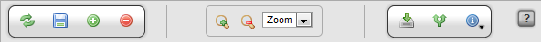
Main Editor Buttons
Add | Add a new node to the canvas. This represents an unregistered sType |
Delete | Delete the selected nodes or connections from the canvas |
Save | Save all changes to the schema |
Editor Zoom Controls
Zoom In | Zoom the canvas in |
Zoom Out | Zoom the canvas out |
Zoom Options | Allow for choosing the zoom level. |
Node Options (Applies to the selected nodes or connections)
Register sType | Registers the selected nodes as new Searchable Types using the registration wizard. If more than one node is selected, the sTypes will be registered in batch. |
Edit Connection | Load the connection editor pop-up. |
Edit Pipelines | Load the Project Work-flow (pipeline) editor. |
Laying out the sTypes
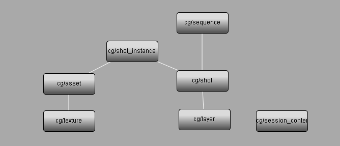
To create a new Searchable Type (sType) in the schema, add a new node to the canvas using the [+] button in the editor. It’s also possible to create a new node from an existing node by simply dragging a connection line from the output handle of the existing node.
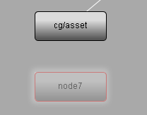
Once the type has been created on the canvas, it can be renamed by right clicking on the node or using a "CTRL-click" on the node.
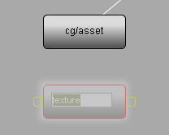
Note
It is important to note that during this initial process, you are creating a "blueprint" for your project. The next steps are to register the sTypes. Each sType in TACTIC is represented as a table in the project database, this table is required to go through a registration process. This process will generate the table as well as provide the opportunity to add columns (properties), a pipeline, default views for the sidebar and more.
Workflow (Pipelines)
Where applicable, you can add the pipeline attribute to a search type to allow for association of the sObjects to a particular pipeline. Having a pipeline assigned allows an sObject to travel through a set number of processes. For each of these processes, a task can be created and assigned to a user, files can be checked in, notes can be submitted and work hours can be logged.
By choosing "Has Pipeline" on creation, an extra "pipeline_code" property will be added to store pipeline associations and a Pipeline will be created and registered for the new sType.
Note
To edit the pipeline, you can click the pipeline link in the top of the editor or, in the sidebar navigate to Project Admin → Project Workflow.
Node Options
Once registered, each node provides options for further configuration of sType related project setup and configuration, which can be executed through the main shelf buttons or by right-clicking on a node:
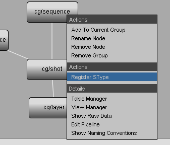
Editor Actions
Add to Current Group | Adds the selected node(s) to the current group (pipeline) |
Rename Node | Rename the node (sType) |
Remove Node | Remove the node (sType) |
Remove Group | Removes the group (pipeline) |
Node Actions
Register sType | Loads the sType registration wizard |
Node Options
Table Manager | Load the Database table manager for the selected type (see "Table Manager" below) |
View Manager | Loads the view manager for the selected sType (see "View Manager" below) |
Show Raw Data | Loads the Raw database data in a table for the selected sType (see "Raw Data" below) |
Edit Pipeline | Loads the Workflow Editor allowing access to edit the pipelines related to the selected sType. |
Show File Naming | Loads the file naming table for the selected sType (see "File Naming" below) |
Table Manager
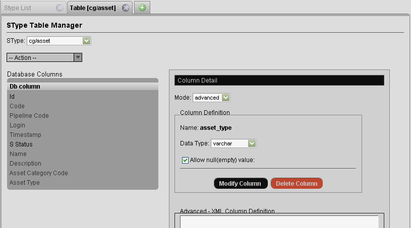
View Manager
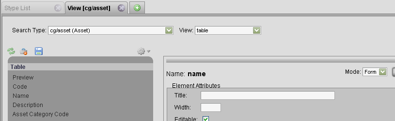
Raw Data
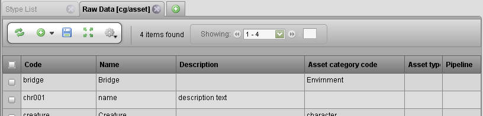
File Naming
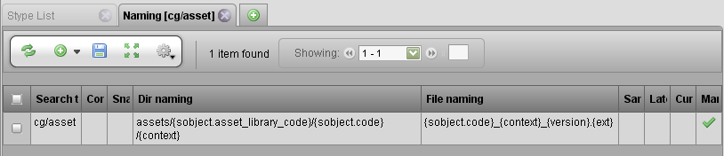
sTypes (also know as Search Types) can be registered either: one at a time, or in batch. The benefit of registering each sType individually is the opportunity to configure and select properties of the new sType that are outside of the TACTIC defaults.
To register an sType, right click on the node to bring up the context menu and choose Register sType.
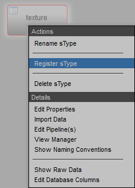
The Register a new sType wizard will appear:
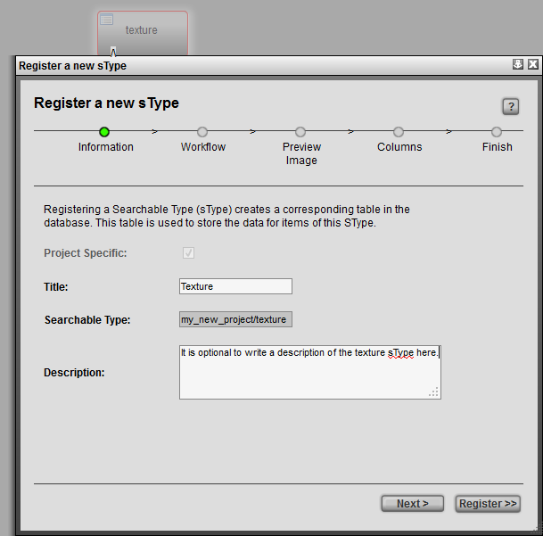
Information
Project Specific | (available when creating a new sType for a project that is based on a template) |
Title | The title for the sType is used in the UI for display purposes. |
Searchable Type | Refers to the database name for the sType. in a "<project>/<name>" format. If no project is defined (i.e.. "art/") than the current project namespace will be used. |
Description (optional) | An optional description of the sType. |
Once the fields are completed, press "Next" or press "Register" to complete the registration process. Note: It is recommended to go through the series of steps outlined in the "Register a new sType" wizard, as this allows for quick and easy configuration of the new sType that is outside of the TACTIC defaults.
Workflow
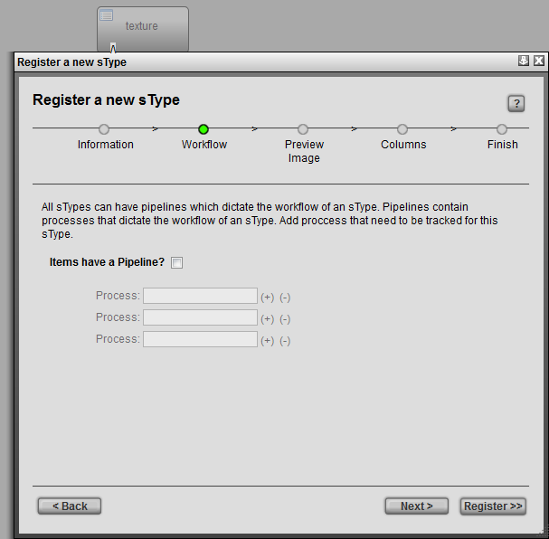
Items have a Pipeline? | When selected, sets up an association for a pipeline workflow for the sObjects in that sType. The section below describes this relationship in more detail |
Process (optional) | Stages in the process. eg. processes for an asset sType: design, model, texture, rigging eg. processes for a shot sType: layout, animation/fx, lighting, render, comp |
Preview Image
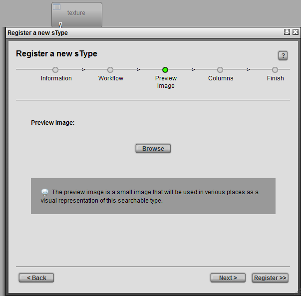
Preview Image (optional) | Browse to select a preview image for the new sType. |
Columns
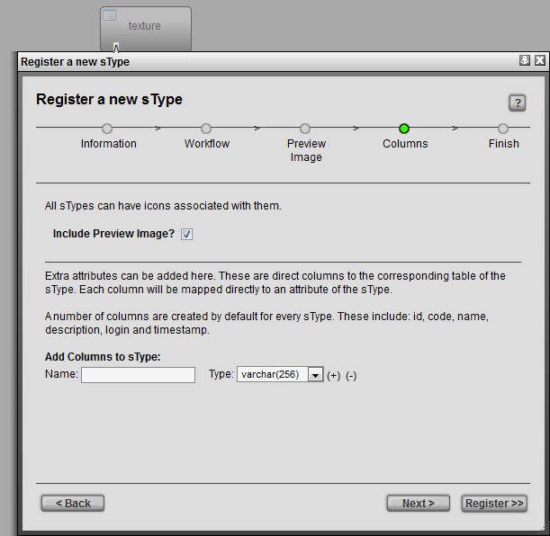
Include Preview Image? | Preview image for each item (sObject) of that sType. |
Add Columns to sType (optional) | During the registration process, default columns are added to the new sType table. You can also add additional columns during this process. Note - columns can be added after this process using the Table Manager |
Finish
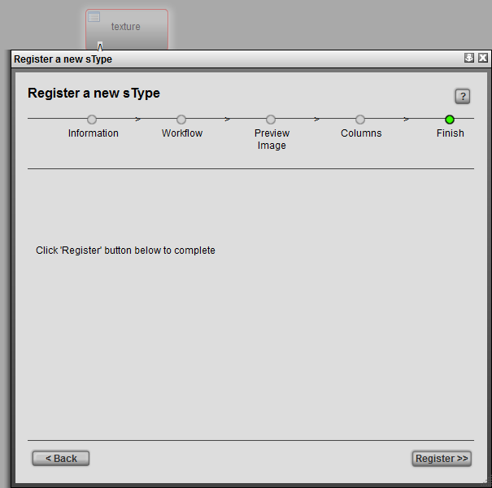
Finish | To complete the registration process, press "Register". A this point, the option is provided to go back and change any information by clicking on the "Back" button. |
In a project, items (ie. files, assets) may be related to each other. For example, a car is built with various parts that can be identified separately but are all related to the same car. Another example can be found cinematic film production. The cinematic footage of one movie is commonly broken down into sequences and shots.
How do these relationships work in TACTIC? - Each sType is represented as a table in the database and each entry in the table represents an sObject. The relationships are created when storing matching data "properties" in each of the tables. In the example tables below there are "Sequence" and "Shot" sTypes. The "code" column matches the "sequence_code" column which illustrates which shot is related to which sequence.
| code | description |
|---|---|
SEQ001 | The first sequence |
SEQ002 | The first sequence |
| sequence_code | code | description |
|---|---|---|
SEQ001 | SEQ001_001 | Sequence one shot one |
SEQ001 | SEQ001_002 | Sequence one shot two |
SEQ002 | SEQ002_001 | Sequence two shot one |
In the Schema Editor, relationships are represented by lines connecting the nodes. When these connections are made, the columns used to relate the sTypes can be chosen in the Connection Editor.
To create a new connection, hover over a node and click-drag a connection to the desired node (sType).
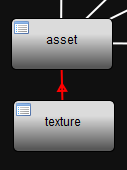
Note
The direction of the arrow in the connection indicates from child to parent.
After a connection is made, the Connection Attributes editor will open to enable the choice of column relationships. It is also possible to create new columns from this editor.
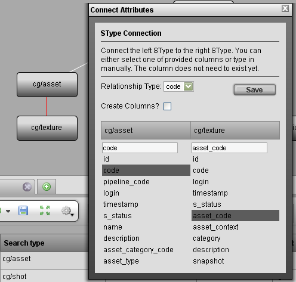
Note
The yellow Switch button in the middle of the tool toggles which node is the child and which one is the parent.